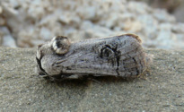

")
| PHRYGANA | Fauna | Flora |
additions nouveautés |
espèces species |
contact -
info - commentaires phrygana1 (at) gmail.com |
| Particularités crétoises | Galles et mines |
| Asparagus aphyllus L. subsp. orientalis (BAKER) P.H. DAVIS |
| 3 | Flora | ASPARAGACEAE | Asparagus TOURN. ex L. |
Asparagus aphyllus subsp. orientalis Melambes (Agios Giorgos) 25 décembre 2009 |
| Feuilles: minuscules, réduites à des écailles. Rameaux transformés en cladodes de longueurs inégales (5 à 10 - 25 mm), groupés par 1 - 7, terminés par une pointe droite très dure et acérée. | |
| Tige: finement cannelée, verte au début et devant ligneuse à écorce grise. | |
| Fleurs: jaune verdâtre, naissant à l'aisselle des cladodes, courtement pédicellées (2.5 - 5 mm). | |
| Anthères: jaune pâle. Filet blanc légèrement jaunâtre. | |
| Fruit: une baie verte, ensuite noire à maturité | |
| Hauteur: 30 - 100 cm | Type biologique: chaméphyte frutescent |
| Floraison: août septembre octobre | Altitudes: 0 - 2000 m |
| Statut en Crète: indigène -- native | |
| Biotopes en Crète: phrygana, lieux rocailleux, bords de chemins, oliveraies, garrigue, broussailles, haies, crevasses, landes hérissonnes. | |
| Distribution: région Méditerranéenne orientale, Moyen-Orient, Egypte, Turquie | |
| Note culinaire: les jeunes pousses peuvent être récoltées et consommées soit crues, cuites à la vapeur ou rissolées . | |
| Plante-hôte pour:: | ||
|  |
|
|
| Parahypopta caestrum | Zebeeba falsalis | |
|
Asparagus aphyllus subsp. orientalis Melambes (Agios Giorgos) 25 octobre 2006 |
Asparagus aphyllus subsp. orientalis Melambes (Agios Giorgos) 14 décembre 2007 |
Asparagus aphyllus subsp. orientalis Melambes (Agios Giorgos) 06 novembre 2006 |
Asparagus aphyllus subsp. orientalis Melambes (Agios Giorgos) 25 décembre 2009 |
|
Asparagus aphyllus subsp. orientalis Melambes (Agios Giorgos) 26 octobre 2006 |
|
Asparagus aphyllus subsp. orientalis Melambes (Agios Giorgos) 26 octobre 2006 |
|
| 20 novembre 2011 |
| © paul fontaine -- © Phrygana.eu 2007 -- 2013 |